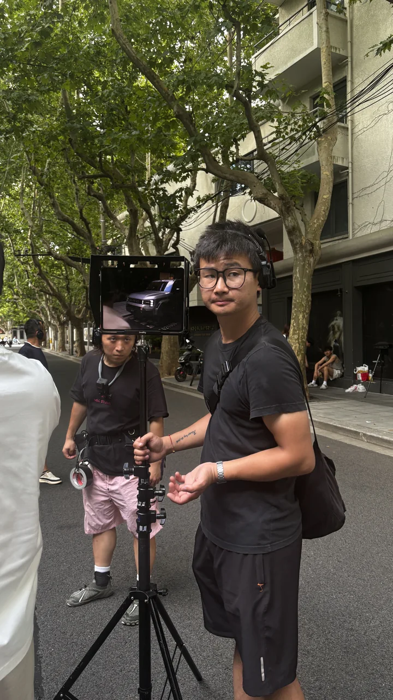
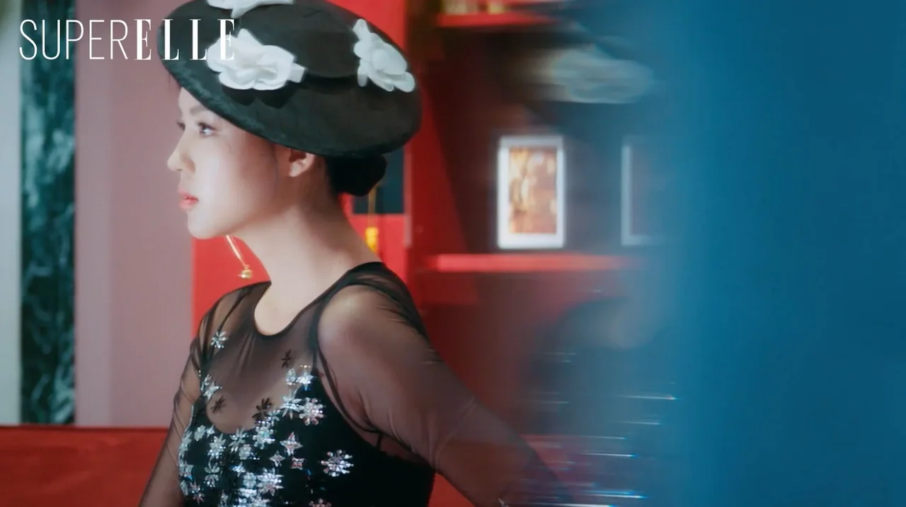
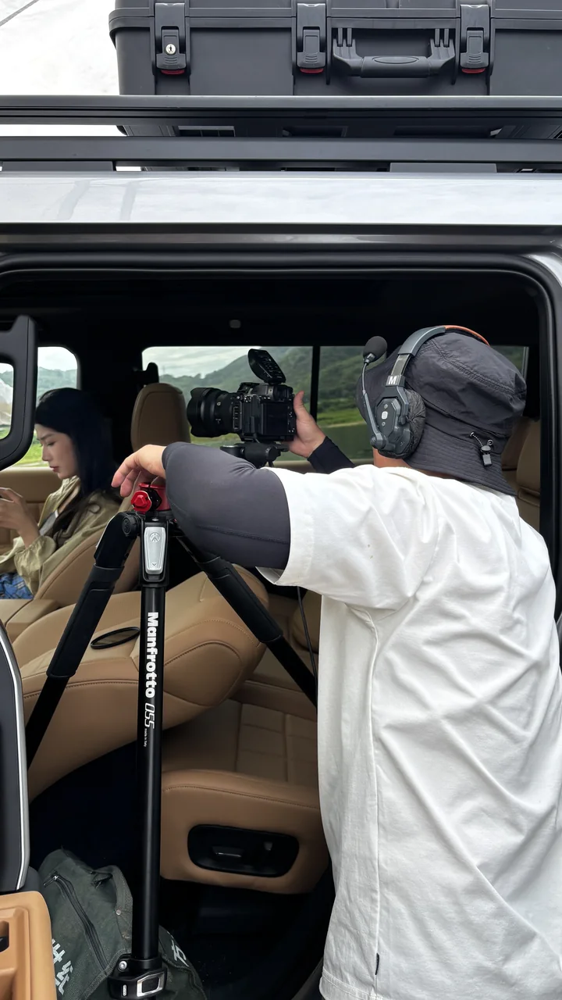
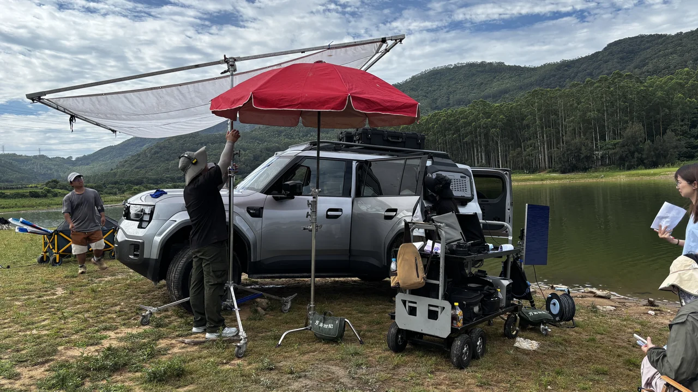
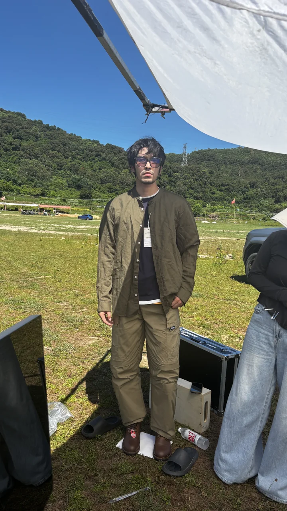
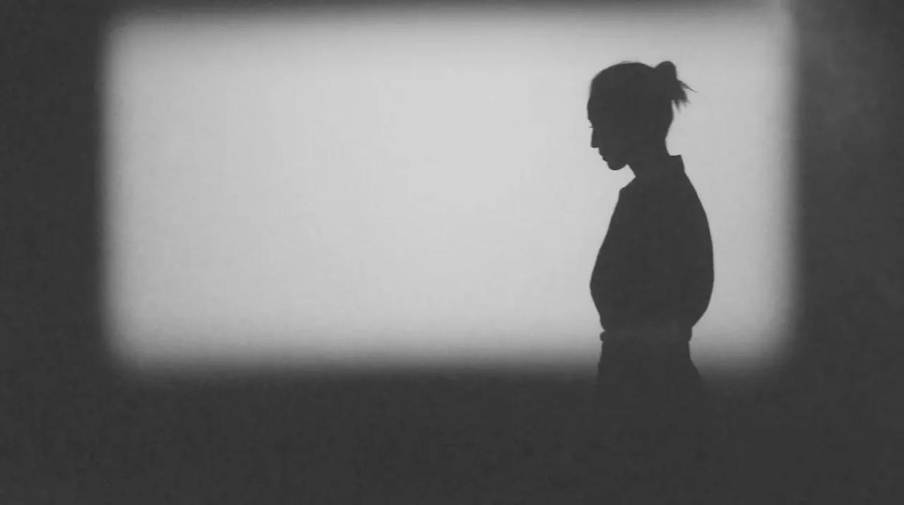

INDEPENDENT VISUAL PRACTICEBEIJING CHINA 2026
YOUFAN






从现场到成片
YOUFAN STUDIO HANLEI SHI导演 影像 摄影
探索有饭
01一个创作者 一个工作室
一些值得认真观看的作品
个人简历
THE DIRECTOR02工作室简历
THE COLLECTIVE03案例作品
MOTION STILLFRAGMENTS 作品片段
以影像表达
THE PEOPLE 公司合伙人与常合作伙伴
查看全部合伙人与伙伴